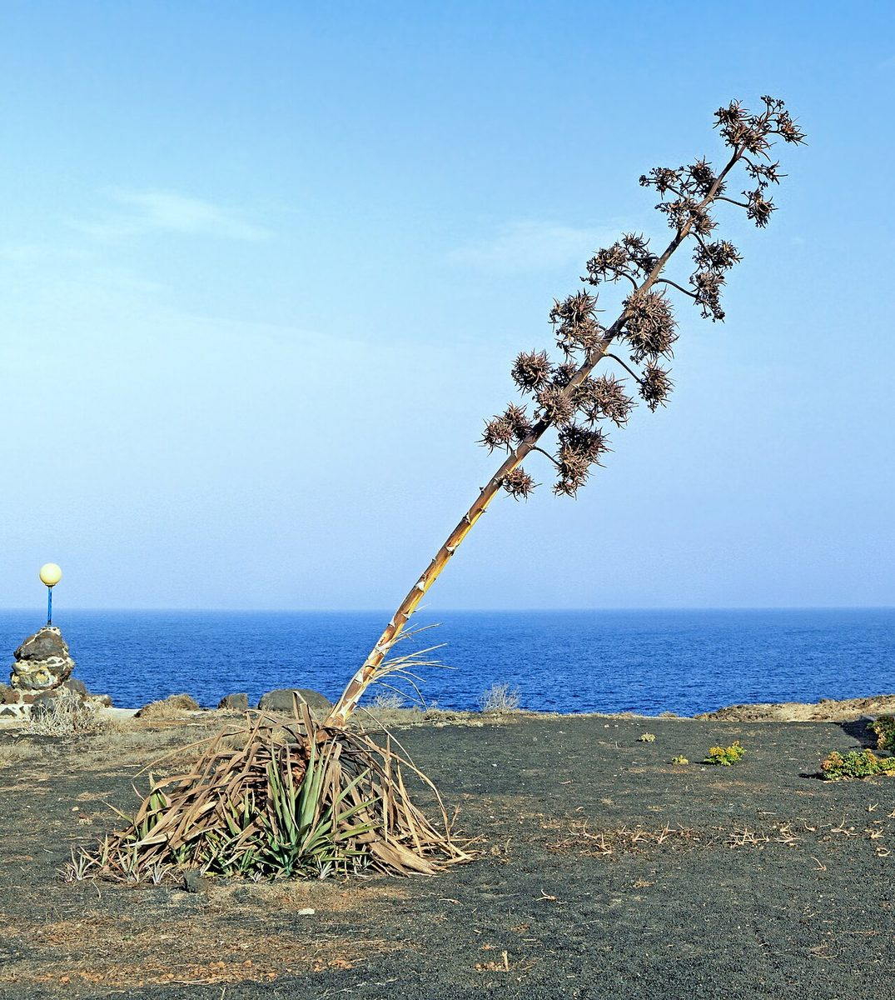

RARE & EXOTIC Sea cliff Valley mouth
Furcraea foetida
— · Mauritius hemp, giant cabuya, green-aloe

Quick facts
| Family | Asparagaceae |
|---|---|
| Scientific name | Furcraea foetida |
| Hawaiian name(s) | — |
| English name(s) | Mauritius hemp, giant cabuya, green-aloe |
| Status | Invasive |
| Conservation | — |
| Coastal zones | Sea cliff Valley mouth |
| Occurrence | Naturalized on the drier Nā Pali sea cliffs and lower valley walls, particularly the leeward Kalalau–Nuʻalolo stretch and the Nā Pali– Kona coastal cliffs. Escapes from old plantings and readily colonizes rocky cliff-face slopes. Iconic when seen from a boat or from the Kalalau Trail — a huge agave-like rosette on the cliff face, often crowned by a tall dead flowering stalk. |
Hazards: Spine risk depends on the plant: the wild plain-green form usually common in Hawaiʻi has smooth leaf margins, but some naturalized clones and horticultural stock carry short, hooked marginal spines and a hard leaf-tip point. Do not push through a rosette without looking; the leaf edges of armed forms can gash a bare calf.
Uncertainty: Whether the naturalized Nā Pali populations are exclusively the smooth-margined wild form or include armed clones is not resolved in the sources we consulted; treat individual rosettes with the standard "assume it can cut" caution. Sources: general weed compendia recording naturalization of *Furcraea foetida* in Hawaiʻi [28] and Wagner et al. [1].
How to identify
- Growth form
- Large stemless (or short-stemmed) evergreen rosette of stiff, sword-shaped succulent leaves radiating from a single point at ground level. Rosette 1.5–3 m across when mature. After many years the plant sends up a single tall flowering stalk 5–10 m high, then dies.
- Size
- Rosette to 3 m across; flowering stalk 5–10 m tall.
- Leaves
- Long (0.9–2 m), sword-shaped, thick and fibrous, narrowing to a hardened point. Bright to dark green, often with a slight blue- green sheen. Leaf margin variable — in the widespread wild green form the margin is smooth (no spines); in some cultivated forms it carries a few widely spaced dark hooked spines. The leaf tip is a hard point but is not a needle-spine like Agave.
- Flowers
- Tall panicle 5–10 m, with drooping greenish-white bell-shaped flowers along the branches. Flowering plants are usually festooned with hundreds of small vegetative bulbils (plantlets) that drop and root — the main mode of local spread. Actual seed is rarely set.
- Fruit / seed
- Fruits rarely form in Hawaiʻi; the bulbils along the flowering stalk take the ecological role of seed.
- Bark / stem
- Rosette stemless or with a short, thick, fibrous trunk under old plants.
- Where it sits on the coast
- Drier sea cliffs and lower valley walls, sea level to about 500 m. Best-lit south-facing cliff aspects. Absent from wet interior valleys.
Clinchers (features that lock the ID)
- Huge stemless rosette of long sword-shaped fibrous green leaves — visible from a boat.
- Very tall flowering stalk (5–10 m) hung with bulbils; old dead stalks persist for years.
- Leaf margin usually smooth in the wild Hawaiʻi green form (see hazards on armed forms).
Look-alikes
- Agave sisalana (sisal, occasional escape) — Agave sisalana has a rigid terminal spine at each leaf tip (a real needle you can feel through a boot), and its flowering stalk is thicker and more candelabra-like. Furcraea leaves taper to a hard point but not a puncturing needle.
- Cordyline fruticosa (kī / ti, native-Polynesian) — Kī has a slender trunk, and the leaves are broader, thinner, and glossier — not stiff, thick, and succulent like Furcraea.
- Dracaena / Yucca species (rare escapes) — Yuccas typically have narrower, more numerous leaves and conspicuous panicles of white bell-flowers earlier in life, without the huge fibrous rosette footprint of Furcraea.
Ecology
Native to northern South America and the Caribbean. Cultivated historically for leaf fiber and as an ornamental; escaped and naturalized in dry-cliff habitats across the tropics. In Hawaiʻi it spreads clonally by bulbils dropped from tall flowering stalks; each rosette outcompetes native cliff flora for cliff-face rooting sites and does not host most native fauna. [1], [2], [13], [14], [51]
Cultural significance
—